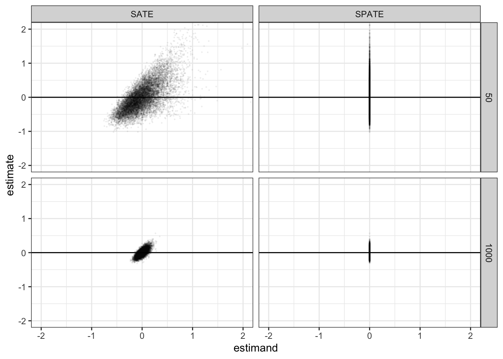

N = 50
dc_design <-
declare_model(N = N, u = rlnorm(N) - exp(.5), Y_Z_0 = 0, Y_Z_1 = u) +
declare_inquiry(SPATE = 0, SATE = mean(Y_Z_1 - Y_Z_0)) +
declare_assignment(Z = complete_ra(N)) +
declare_measurement(Y = reveal_outcomes(Y ~ Z)) +
declare_estimator(Y ~ Z, inquiry = c("SPATE", "SATE")) Deaton and Cartwright (2017) provide multiple arguments against claims that randomized trials should be thought of as a kind of gold standard of scientific evidence. One striking argument they make is that randomization does not justify the statistical tests that researchers typically use. They are right in that. Even if researchers can claim that their estimates of uncertainty are justified by randomization, their habitual use of those estimates to conduct t-tests are not. To get a handle on how severe the problem is we replicate the results in Deaton and Cartwright (2017) and then use a wider set of diagnosands to probe more deeply. Our investigation suggests that what at first seems like a big problem might not in fact be so great if your hypotheses are what they often are for experimentalists—sharp and sample-focused.
More specifically, Deaton and Cartwright (2017) argue that that “spurious significance […] arises when the distribution of treatment effects contains outliers or, more generally, is not symmetric.” They back up the claim with simulation results from a case with heterogeneous asymmetrically distributed treatment effects that center on 0. In fact however, both the sharp null of no effect and the null of no average effect in a given sample are false in this example and so the worry about over-rejecting does not apply to these hypotheses.
A bit more generally, under the sharp null of no effect the distribution of treatment effects in simple trials (with 50% assignment probabilities) will be perfectly symmetrical even if the distribution of potential outcomes is arbitrarily skewed and so the concern Deaton and Cartwright (2017) point to doesn’t arise in the first place.
The most important take away though might be that it’s hard to think through when the use of t-tests is or is not appropriate. But design diagnosis can tip you off to whether this likely a problem in your case.
The Deaton and Cartwright Example
The design described by Deaton and Cartwright can be declared quite compactly:
The key thing in this design is that the treatment effects have a very skewed distribution (distribution log normal, though recentered on 0).
Let’s look at the power of this design over a range of N’s. Power is a key diagnosand here because Deaton and Cartwright’s position is that, since the true average treatment effect is 0, the power should be 0.05—that is, you should only reject a true null 5% of the time if you are using a 5% significance cutoff.
Here we run a diagnosis over a range of designs:
diagnosis <- diagnose_design(redesign(dc_design, N = c(50, 100, 200, 400, 600, 800, 1000)))and plot the results:
get_diagnosands(diagnosis) %>%
mutate(N = as.numeric(paste(N))) %>%
ggplot(aes(N, power)) +
geom_line() +
facet_wrap(~inquiry)
As advertised, power appears too high with the small \(N\) cases. It declines towards 0.05 as \(N\) increases, though it is still somewhat greater than 0.05 even for reasonably sized studies. The same pattern holds whether we are targeting the superpopulation average treatment effect (SPATE) or the sample average treatment effect (SATE), because the estimator is identical in both cases.
A closer look
If you plot the estimates and the estimands from the simulations you will notice an interesting feature of the Deaton and Cartwright case. Although the true SPATE is always zero, the SATE for any particular finite sample is not zero. Here are scatterplots of the joint distribution of estimands and estimates for two sample sizes. The true value of the SPATE is always zero, but the true value of the SATE is never exactly zero. You can see that the distribution of estimates is highly skewed (most easily seen for the SPATE facet when N = 50).
get_simulations(diagnosis) %>%
ggplot(aes(estimand, estimate)) +
geom_point(alpha = 0.05, size = 0.5, stroke = 0) +
facet_grid(N~inquiry)
The fact that the true value of the SATE is never zero has implications for the interpretation of power, but also for a range of other diagnosands. In addition to power, coverage, the true standard error, the average estimated standard error, and the type-S rate (probability that a significant result is of the wrong sign), we’ll calculate the variance of the estimate, the average estimated variance, and the variance of the estimands themselves.
diagnosands <- declare_diagnosands(select = c("power", "coverage", "sd_estimate", "mean_se", "type_s_rate"),
var_estimate = var(estimate),
est_var_est = mean(std.error^2),
var_estimand = var(estimand))Now calculate the diagnosands for the small design:
diagnosis <- diagnose_design(dc_design, diagnosands = diagnosands)Warning in sprintf(paste0("%.", digits, "f"), as.numeric(x)): NAs introduced by
coercion| Inquiry | Select | Var Estimate | Est Var Est | Var Estimand |
|---|---|---|---|---|
| SATE | NA | 0.19 | 0.19 | 0.10 |
| NA | (0.00) | (0.00) | (0.00) | |
| SPATE | NA | 0.19 | 0.19 | 0.00 |
| NA | (0.00) | (0.00) | (0.00) |
A few things are worth noting here.
First, estimates of variance do pretty well. In this case there is no covariance between potential outcomes and so the Neyman approach does fine. The Neyman approach doesn’t make any assumptions about the shape of distributions and so the skew makes no difference here.
Second, the standard error estimates – the square root of the variance estimates – are too low. This is because the square root function is a nonlinear transformation. Unbiasedness of the variance does not imply unbiasedness of the standard deviation.
Third, coverage is off. Confidence intervals depend on the use of the \(t\)-distribution, which is in question here. Note though that the problem is particularly acute for SPATE; coverage for the SATE seems very good.
Fourth, the type S error rate is really worth looking at. The type S rate reports the probability that a significant result is of the wrong sign. For the superpopulation estimand—the SPATE—which we assume to be 0, the sign is always wrong. But for the SATE—the sample average treatment effect—the sign is rarely wrong. In fact the probability of getting a wrongly signed significant estimate is power x type_s_rate = very very small.
This forces a rethinking of the results. Looking at this evidence it seems like the real worry, perhaps, is that we fail to reject the null so often, given that is, in practice, never true. Conversely, from the SATE perspectives, most of these seemingly wrong results that worry Deaton and Cartwright are really correct results.
Should a researcher coming at this from a design-based perspective worry? Researchers using design-based inference might not approach the hypothesis test using a t-test but might instead use randomization inference. Unlike the t-test, the randomization inference approach is justified by the randomization. In doing so though, they would likely test what’s called the sharp null—the hypothesis that the effect is zero not just on average but for all units. Interestingly in this example, the sharp null is false not just for all finite samples, but also for the superpopulation. Looking at all this from the randomization inference perspective, one might again worry not that there is too much rejection of the null but that there is insufficient rejection of the null.1
Thus, a fuller diagnosis suggests that while power may be too high for a weak null in the superpopulation, it is regrettably low for the kind of sample-based hypotheses or sharp nulls that experimentalists often focus on.
Codas
We get a little further into the weeds here.
There is no skew when sharp nulls are true
For the record, we can do the same analysis when the sharp null is in fact true. This just requires replacing the potential outcomes step (step 2) in the design.
dc_sharp <- replace_step(dc_design, 1,
declare_model(N = N, u = rlnorm(N) - exp(.5), Y_Z_0 = u, Y_Z_1 = u))
diagnose_design(dc_sharp)Warning in sprintf(paste0("%.", digits, "f"), as.numeric(x)): NAs introduced by
coercion| Inquiry | Select | Var Estimate | Est Var Est | Var Estimand |
|---|---|---|---|---|
| SATE | NA | 0.37 | 0.37 | 0.00 |
| NA | (0.01) | (0.00) | (0.00) | |
| SPATE | NA | 0.37 | 0.37 | 0.00 |
| NA | (0.01) | (0.00) | (0.00) |
We find that we do not see the same issue arise when in fact the sharp null is true (in the superpopulation, and thus in every sample). With a true sharp null (and .5 assignment probabilities), even if the potential outcomes are very skewed, the distribution of estimated effects will be symmetrical for the simple reason that, for any estimated treatment effect \(\hat{\tau}\) arising from assignment \(Z\), assignment \((1-Z)\) yields \((-\hat{\tau})\). This clarifies that the skew-based concern about over-rejecting a null that Deaton and Cartwright raise actually depends on the sharp null being false in the first place. (Though, to be clear, the assumption of 50% assignment matters here — skew in estimated effects is certainly possible under the sharp null with other assignment probabilities.)
But there can still be dragons, so then what to do?
Although we might not have to worry about skew when sharp nulls are true, \(t\)-stats might still lead you astray when tails are fat.
As a simple example, imagine a world in which \(Y = 0\) for 50 units and \(Y = 1\) for 50 units, independent of \(Z\). Say \(Z\) is randomly assigned to just four units. Whenever \(Z\) is assigned to four units with the same value on \(Y\), a t-test will suggest a significant difference (\(p = 0.04\)). You can interpret that as a claim that such a data pattern should only be observed 4% of the time if the null is true. But you can figure out pretty quickly that you will see data patterns like this about one eighth of the time.2 So the probability of observing such data under the null is actually much higher than the 4% you might infer from the \(t\)-test.
So in general there can be dangers using t-tests even with experimental data. A solution in this instance, if we are interested in a sharp null of no effect, is to do randomization inference. This would produce exactly the right p-value. But that will help only if you are alerted to the problem. To alert yourself to the problem, you could routinely diagnose a design with zero effects (a “null design”) and so set yourself up to get a tip off when your power is too high.
References
Deaton, Angus, and Nancy Cartwright. 2017. “Understanding and Misunderstanding Randomized Controlled Trials.” Social Science & Medicine.
Footnotes
Take a look at the
ri2package for more on conducting randomization inference in R.↩︎There is a roughly 50% chance the second unit will have the same \(Y\) value as the first unit, roughly 50% chance that the third will be the same as the second, and roughly 50% chance the fourth the same as the third. More exactly: (49/99)x(48/98)x(47/97) = 0.117.↩︎